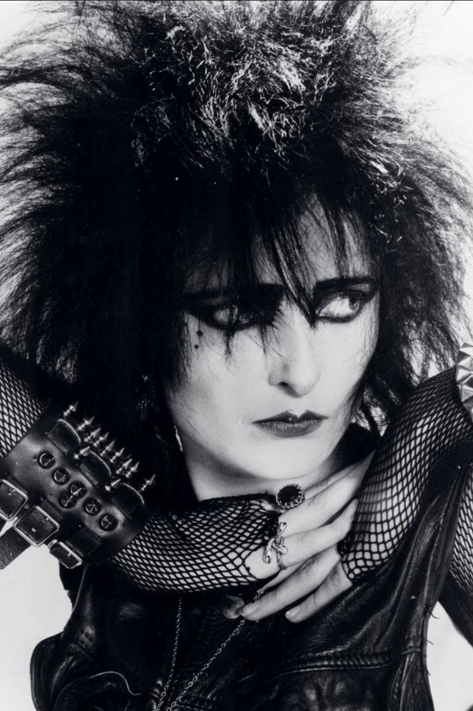

"les hippies étaient des gens pas super cools qui voulaient paraître
sympas, les punks étaient des gens super cools qui voulaient avoir l'air
pas sympas"
anonyme
Fin des années 1970, le punk est mort. La radicalité laisse place au
conformisme et le NO FUTURE est rangé dans un tiroir au fond d’une cave,
toute la scène musicale rentre dans le rang. Toute? Non... Une poignée
d’irréductibles chevelus à la capillarité audacieuse résiste encore et
toujours à l’écœurante banalité du quotidien. Le post-punk pose ses
premières briques, la new-wave accorde ses synthés, et les morts sortent
de terre.

Dans une dynamique plus introvertie voire élitiste, quelques
avant-gardistes remanient les codes et imposent leur vision dans un
monde qu’ils jugent au mieux endormi, les chauves-souris se
réveillent...
ce site est sous license creative-commons bla bla bla.... les images et
vidéos de ce site sont la propriété de leurs auteurs respectifs bla bla..
les informations sont issues de Wikipedia bla..